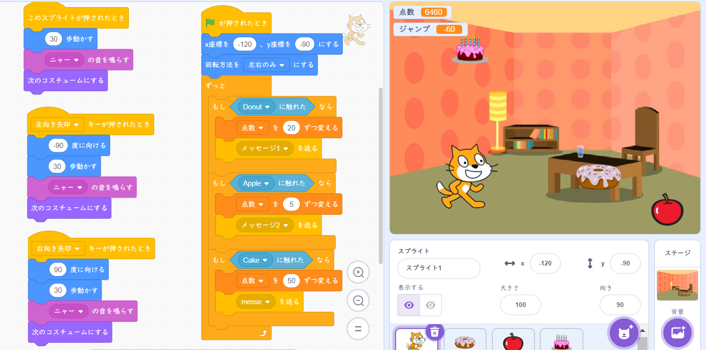

1週目のレポート ： 公大高専１年実習I-1
K-05班27番 ニックネーム nakami108
第1週目
1-1 サイエンスアート
1.内容
スクラッチを使って線を書くプログラムを作成した。見本より細いペンにした。また色の変化を1ずつにすることで滑らかに色がグラデーションとなって変わるようにした。
2.感想
数値を少し変えるだけで思ってもみない図形になるのが面白かった。次はもっと複雑な図形をプログラムしてみたい。
1-2 ゲーム

1.内容
猫が左右に動き、落ちてくるリンゴやドーナツ、ケーキを獲得すると点数が入るミニゲームのプログラムを作成した。 落ちてくるものによって落ちる速度や獲得したときに入る点数を変えることでゲーム性を持たせた。
2.感想
制御ブロックを使って条件分岐によりそれぞれのスプライトに対して簡潔に指令を伝えることが出来たと思う。もっと負荷をかけないプログラムの仕方があると思うので考えてみたい。
1-3 ホームページ作成
私のホームページ
1.内容
ホームページを作成した。プログラムの書き込み方など初めてのことばかりだった。
2.感想
最初は二進も三進もいかずルールも何もわからない状態だったのが、分からないなりに触っていくと段々書き込むことが出来るようになっていき、とても楽しかった。